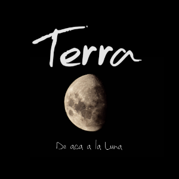

ALGUIEN MÁS
Lista de Canciones


Cruce de muchos modos
Sueños sin que calzar
Besos ahogados pronto
En charcos de olvidar
Y unos ojos sin saberlo estaban ya
Formulando el modo mas hermoso a entrar
A mi hogar
Fueron palabras buenas
Las que toco el azar
Sirvieron de herramientas
Para llegar a acá
Poco a poco fue el calor a dominar
La emoción que se la asocia a palpitar
Anormal
Con un beso de esa dama
Ya no me siento alguien mas
Todo el suelo se derrama
Y parezco algo flotar
Sus ojos caramelo
Dan vida a esta ciudad
Cuando todo esta muerto
Su voz me hace intentar
Desmembrar los bloques grises del lugar
Continuar hasta esos labios escuchar
Y besar
Con un beso de esa dama
Ya no me siento alguien mas
Todo el suelo se derrama
Y parezco algo flotar
Cuesta un poco arriesgarse de nuevo
De valientes siempre fue este juego
Pero si los dos tenemos miedo
Puede que esto huela bien enserio
Serás propia de un cuento
Sera todo verdad
Sera que el mundo es nuevo
Desde que estas acá